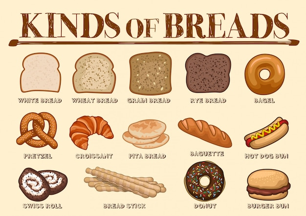

Bread is a staple food prepared from a dough of flour (usually wheat) and water, usually by baking. Throughout recorded history and around the world, it has been an important part of many cultures' diet. It is one of the oldest human-made foods, having been of significance since the dawn of agriculture, and plays an essential role in both religious rituals and secular culture.
Bread
Bread is the staple food of the Middle East, Central Asia, North Africa, Europe, and in European-derived cultures such as those in the Americas, Australia, and Southern Africa. This is in contrast to parts of South and East Asia, where rice or noodles are the staple. Bread is usually made from a wheat-flour dough that is cultured with yeast, allowed to rise, and finally baked in an oven. The addition of yeast to the bread explains the air pockets commonly found in bread. Owing to its high levels of gluten (which give the dough sponginess and elasticity), common or bread wheat is the most common grain used for the preparation of bread, which makes the largest single contribution to the world's food supply of any food.Sangak, an Iranian flatbread Strucia — a type of European sweet bread Bread is also made from the flour of other wheat species (including spelt, emmer, einkorn and kamut).[14] Non-wheat cereals including rye, barley, maize (corn), oats, sorghum, millet and rice have been used to make bread, but, with the exception of rye, usually in combination with wheat flour as they have less gluten. Gluten-free breads are made using flours from a variety of ingredients such as almonds, rice, sorghum, corn, legumes such as beans, and tubers such as cassava. Since these foods lack gluten, dough made from them may not hold its shape as the loaves rise, and their crumb may be dense with little aeration. Additives such as xanthan gum, guar gum, hydroxypropyl methylcellulose (HPMC), corn starch, or eggs are used to compensate for the lack of gluten.
Culinary uses
Bread can be served at many temperatures; once baked, it can subsequently be toasted. It is most commonly eaten with the hands, either by itself or as a carrier for other foods. Bread can be spread with butter, dipped into liquids such as gravy, olive oil, or soup; it can be topped with various sweet and savory spreads, or used to make sandwiches containing meats, cheeses, vegetables, and condiments.Bread is used as an ingredient in other culinary preparations, such as the use of breadcrumbs to provide crunchy crusts or thicken sauces; toasted cubes of bread, called croutons, are used as a salad topping; seasoned bread is used as stuffing inside roasted turkey; sweet or savoury bread puddings are made with bread and various liquids; egg and milk-soaked bread is fried as French toast; and bread is used as a binding agent in sausages, meatballs and other ground meat products. For more info press here. If you have any questions, contact us
 Mr.Hackerman
Mr.Hackerman